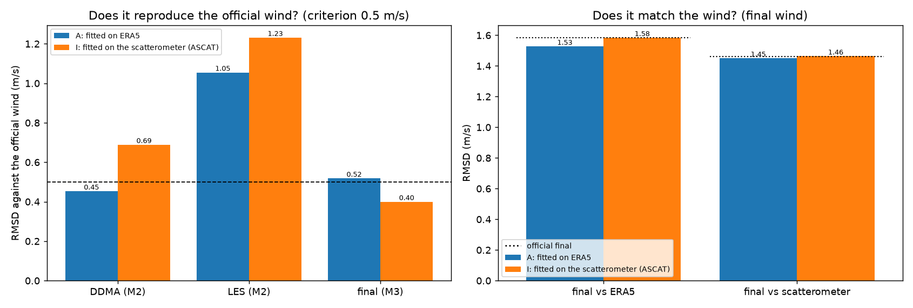

I: tabelas ajustadas ao escaterômetro¶
O modelo I é o modelo A mudando uma única coisa: a referência do ajuste. Em vez do vento do ERA5, as quatro tabelas (GMF, MV, estado do mar e debias) são ajustadas contra o vento do escaterômetro de 2021. Para que o teste continue independente, o ajuste usa só os dois ASCAT (Metop-B e Metop-C), e o veredito é dado pelo HSCAT (HY-2B), que ficou de fora.
| Versão do vento | gmf-v6_mv-v5_ss-v6_db-v12 |
| Treino | 2021: os pontos do CYGNSS com uma célula do ASCAT a até 25 km e 30 min (30 milhões, contra 468 milhões com o ERA5) |
| Teste | 01/02/2022 a 31/12/2022; o veredito é o HSCAT (20 milhões de pares) |
| Data da rodada | 28/10/2026, no servidor do projeto |
Resumo
- O piso da régua é baixo: o ERA5 erra só 0,89 m/s contra o HSCAT e quase não subestima o vento forte (cerca de −0,6 m/s entre 14 e 20 m/s). Os 1,45 m/s do nosso vento estão bem acima disso: há espaço para melhorar, e a subestimação do vento forte não vem do ERA5.
- Ajustar contra o escaterômetro não resolve: contra o HSCAT, o erro total piora (1,463 contra 1,433 m/s). O vento forte melhora entre 10 e 18 m/s, mas piora acima de 20 m/s, onde quase não há pares de treino.
- O vento do modelo I fica mais perto do oficial da NASA: 0,40 m/s, o primeiro abaixo do critério do M3.
- Não adotado. O limite está no sinal do CYGNSS e em como o algoritmo o usa, e não na referência.
De onde veio a ideia¶
Todas as abordagens até o G subestimam o vento forte, como o produto oficial: cerca de −2 m/s acima de 15 m/s e −3 m/s acima de 20 m/s. Todas foram ajustadas contra o ERA5, que é um modelo meteorológico e é conhecido por subestimar o vento forte. O modelo G mostrou que uma etapa ajustada como "a média da referência em cada faixa do nosso vento" puxa o vento para a distribuição da própria referência. O escaterômetro mede o que o GNSS-R mede, a rugosidade do mar, por radar.
A hipótese¶
Se a subestimação do vento forte vem da referência do ajuste, trocar o ERA5 pelo escaterômetro deve reduzi-la, medida contra um escaterômetro que não entrou no ajuste.
O que foi testado¶
| Etapa | Modelo A | Modelo I |
|---|---|---|
| Referência do ajuste | ERA5 (todos os pontos de 2021) | escaterômetro ASCAT (Metop-B e Metop-C), só os pontos com uma célula a até 25 km e 30 min |
| GMF, MV, estado do mar, debias | ajustados contra o ERA5 | os mesmos métodos, ajustados contra o escaterômetro |
- O pareamento de 2021 é o mesmo de 2022: para cada ponto do CYGNSS, a célula de escaterômetro mais próxima, de qualquer instrumento. Os pares cuja célula mais próxima é do HSCAT ficam fora do ajuste.
- O vento do escaterômetro é o equivalente de tensão a 10 m, sem conversão.
- O HSCAT é um radar diferente dos ASCAT (banda Ku contra banda C), de outra agência e calibrado à parte. Não é uma referência totalmente independente, porque mede a mesma grandeza, mas não foi visto no ajuste.
- Para cada instrumento, comparam-se nas mesmas linhas o vento do A, o do I, o oficial e o do ERA5. A linha do ERA5 é o "piso": quanto duas referências de vento discordam entre si.
Resultados¶

Contra cada instrumento¶
RMSD e viés, em m/s, nas mesmas linhas (QC oficial, todos os ventos presentes):
| Instrumento | Pares | A | I | Oficial | ERA5 (piso) |
|---|---|---|---|---|---|
| HSCAT (fora do ajuste) | 20,1 mi | 1,433 / −0,16 | 1,463 / +0,10 | 1,457 / +0,12 | 0,887 / −0,17 |
| ASCAT Metop-B (no ajuste do I) | 14,0 mi | 1,466 / −0,22 | 1,467 / +0,03 | 1,469 / +0,05 | 0,857 / −0,27 |
| ASCAT Metop-C (no ajuste do I) | 14,1 mi | 1,458 / −0,22 | 1,462 / +0,03 | 1,464 / +0,05 | 0,857 / −0,27 |
Por faixa de vento, contra o HSCAT¶
Viés / RMSD, em m/s, por faixa de 2 m/s do vento do HSCAT:
| Faixa (m/s) | Pares | A | I | Oficial | ERA5 (piso) |
|---|---|---|---|---|---|
| 0 a 2 | 542 mil | +0,22 / 0,89 | +0,39 / 1,00 | +0,45 / 1,00 | +0,28 / 0,87 |
| 2 a 4 | 2,2 mi | −0,05 / 1,05 | +0,19 / 1,07 | +0,15 / 1,04 | −0,15 / 0,93 |
| 4 a 6 | 4,8 mi | +0,07 / 1,16 | +0,32 / 1,21 | +0,32 / 1,24 | −0,21 / 0,91 |
| 6 a 8 | 6,0 mi | +0,03 / 1,32 | +0,28 / 1,39 | +0,37 / 1,41 | −0,15 / 0,83 |
| 8 a 10 | 4,1 mi | −0,33 / 1,56 | −0,05 / 1,60 | −0,00 / 1,55 | −0,16 / 0,84 |
| 10 a 12 | 1,6 mi | −0,81 / 1,98 | −0,48 / 1,95 | −0,59 / 1,90 | −0,26 / 0,95 |
| 12 a 14 | 543 mil | −1,29 / 2,47 | −0,93 / 2,36 | −1,20 / 2,39 | −0,40 / 1,10 |
| 14 a 16 | 168 mil | −1,55 / 2,85 | −1,21 / 2,68 | −1,53 / 2,78 | −0,51 / 1,24 |
| 16 a 18 | 36 mil | −1,75 / 3,03 | −1,59 / 2,84 | −1,86 / 3,05 | −0,61 / 1,39 |
| 18 a 20 | 4,4 mil | −2,14 / 3,16 | −2,27 / 3,05 | −2,23 / 3,20 | −0,75 / 1,51 |
| 20 a 22 | 405 | −2,55 / 3,55 | −3,87 / 4,39 | −2,50 / 3,79 | −0,65 / 1,36 |
| 22 ou mais | 92 | −4,1 / 4,3 | −5,8 / 5,9 | −4,3 / 4,5 | −2,0 / 2,6 |
- Até 8 m/s, o I fica um pouco acima do A, com viés positivo: o vento do escaterômetro é, em média, um pouco mais alto que o do ERA5.
- Entre 8 e 18 m/s, o I subestima menos (por exemplo, −1,21 contra −1,55 m/s entre 14 e 16 m/s) e erra um pouco menos.
- Acima de 20 m/s, o I piora muito: há poucos pares de treino nessa faixa, e as tabelas ficam mal estimadas.
- O ERA5 erra pouco em todas as faixas, e subestima o vento forte bem menos que qualquer abordagem nossa.
Comparação com as abordagens anteriores¶
Contra todos os escaterômetros juntos, como nas outras páginas. A coluna E (rede de pesos) é a média das cinco sementes. O ajuste do I viu os dois ASCAT, que são cerca de 58% desses pares; o veredito independente é a tabela do HSCAT acima.
| Medida | Oficial | A | B | C | D | E | F | G | I |
|---|---|---|---|---|---|---|---|---|---|
| Vento DDMA × oficial, RMSD (M2) | — | 0,45 | 0,47 | 0,45 | 0,45 | 0,45 | 0,28 | 0,45 | 0,69 |
| Vento LES × oficial, RMSD (M2) | — | 1,05 | 1,08 | 1,05 | 1,05 | 1,05 | 0,98 | 1,05 | 1,23 |
| Combinação (MV) × ERA5, RMSD | — | 1,88 | 1,87 | 1,88 | 1,89 | 1,56 | 1,81 | 3,13 | 2,00 |
| Final × final oficial, RMSD (M3) | — | 0,518 | 0,517 | 0,546 | 0,521 | 0,804 | 0,522 | 0,678 | 0,400 |
| Final × ERA5, RMSD | 1,585 | 1,527 | 1,528 | 1,537 | 1,526 | 1,591 | 1,526 | 1,515 | 1,584 |
| Final × escaterômetro, RMSD | 1,463 | 1,450 | 1,451 | 1,463 | 1,450 | 1,509 | 1,450 | 1,440 | 1,463 |
| Final × escaterômetro, viés | +0,08 | −0,19 | −0,19 | −0,21 | −0,19 | −0,22 | −0,19 | −0,20 | +0,06 |
| Média do RMSD nas faixas de 2 m/s, de 0 a 24 m/s (escaterômetro) | 2,36 | 2,36 | 2,35 | 2,62 | 2,35 | 3,05 | 2,35 | 2,37 | 2,58 |
| Viés com vento de 15 m/s ou mais (escaterômetro) | −2,09 | −2,04 | −2,04 | −2,63 | −2,04 | −2,91 | −2,04 | −2,07 | −1,88 |
| Viés com vento de 20 m/s ou mais (escaterômetro) | −2,83 | −2,99 | −2,91 | −4,86 | −2,93 | −5,44 | −2,94 | −3,21 | −4,62 |
O que aprendemos¶
- A régua não é o limite. O ERA5 e o escaterômetro discordam só em cerca de 0,87 m/s, e isso já inclui a distância de até 25 km e 30 minutos entre os pares e o erro dos dois. O nosso vento está a 1,45 m/s: a maior parte desse erro vem do CYGNSS, e há espaço para um método melhor.
- A subestimação do vento forte não vem da referência. O ERA5 subestima o vento forte em cerca de −0,6 m/s contra o escaterômetro; as nossas abordagens, em −2 a −3 m/s. Mesmo ajustando contra o escaterômetro, a subestimação continua. O limite está no sinal do CYGNSS (que muda pouco com vento forte) e na forma como as tabelas o usam.
- Menos dados de treino custam caro nos extremos. Com só os pares do ASCAT, há poucos exemplos acima de 20 m/s, e é justamente aí que o I piora.
- O produto da NASA parece mais próximo de um ajuste ao escaterômetro. O vento do I fica a 0,40 m/s do oficial (o A, a 0,52), e o viés contra o oficial praticamente some. É uma pista, não uma prova, de como as tabelas oficiais foram construídas.
Situação¶
Não adotado. Pela regra de ganho, o I não substitui o A: a média das faixas piora (2,58 contra 2,36) e, contra o HSCAT, o erro total também. A decisão de treinar a rede com a DDM inteira contra o ERA5 se mantém: o ERA5 é uma boa referência, e a escolha da referência não é o que limita o vento forte.